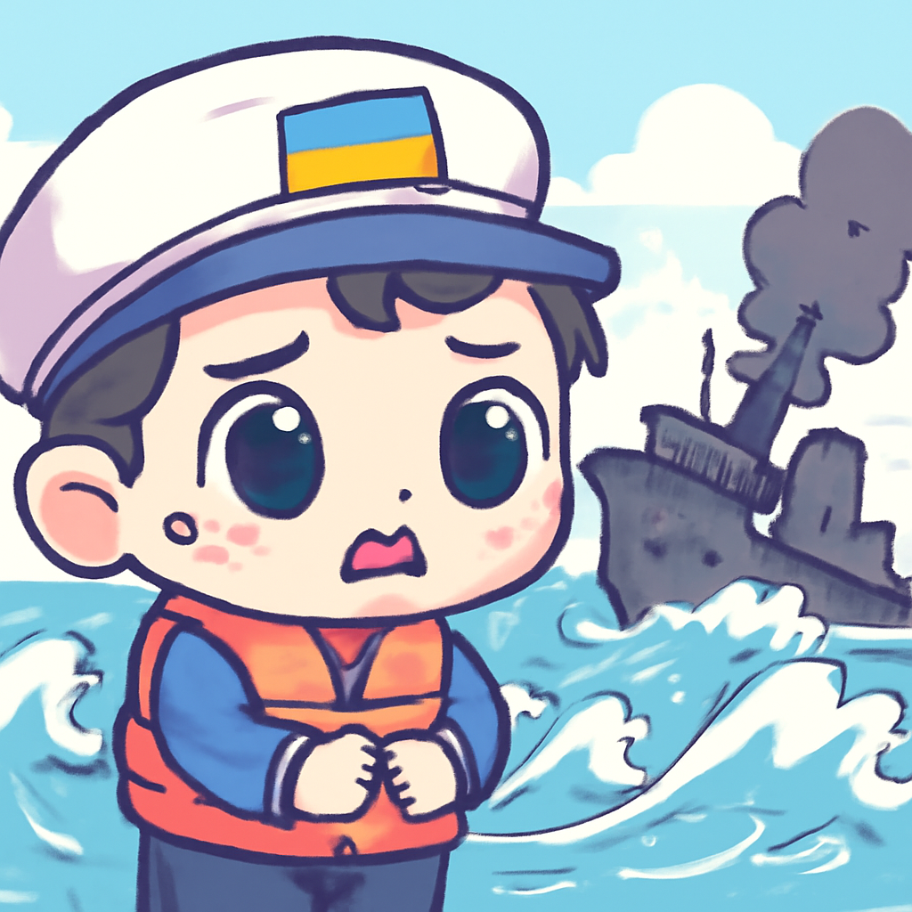
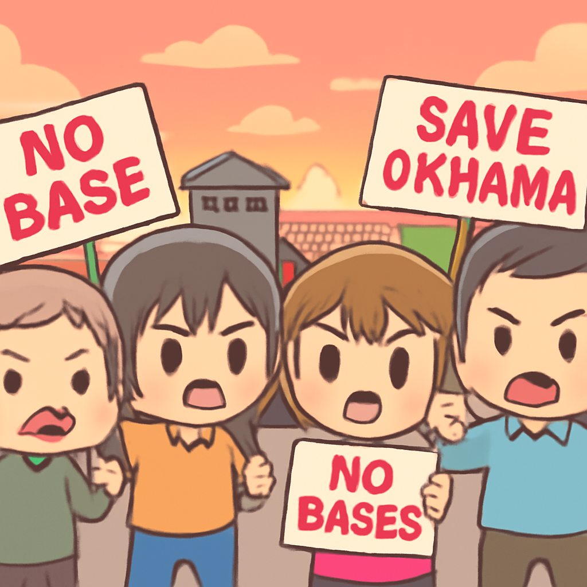
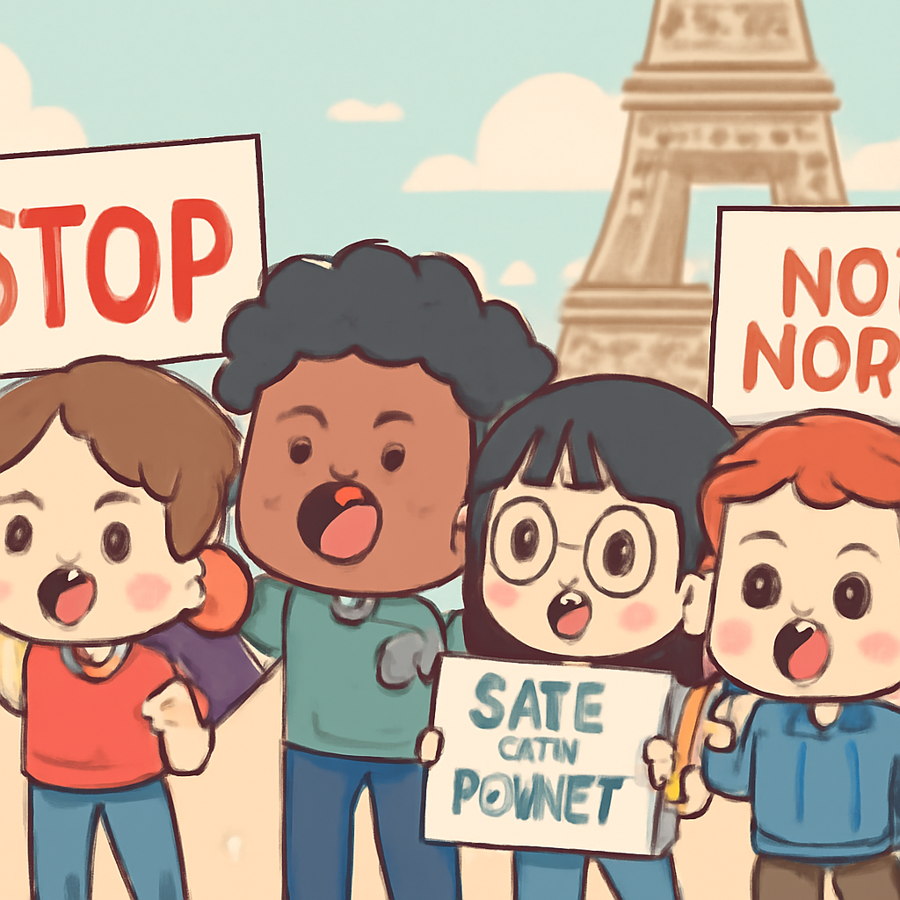
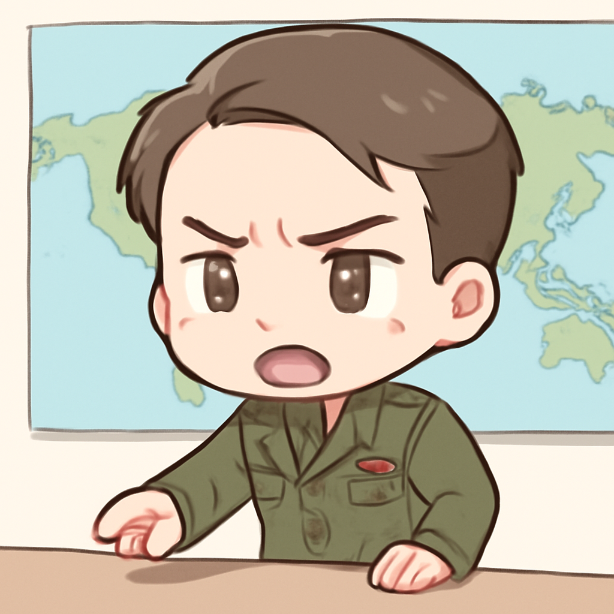

其一 · 烏克蘭敖德薩 · 俄羅斯襲擊玉米運輸船
烏克蘭指控俄羅斯襲擊運輸船，造成死傷

在烏克蘭敖德薩，俄羅斯對一艘運輸玉米的土耳其船進行襲擊，船長不幸喪生，11名船員獲救。這一事件再次凸顯了俄烏戰爭對全球糧食安全的影響，尤其是穀物出口的脆弱性。看來，海上航行的日子又要小心翼翼了。
🔗 原始新聞 ↗
2026-10-06 · 以古觀今，以笑抗愁
烏克蘭指控俄羅斯襲擊運輸船，造成死傷

在烏克蘭敖德薩，俄羅斯對一艘運輸玉米的土耳其船進行襲擊，船長不幸喪生，11名船員獲救。這一事件再次凸顯了俄烏戰爭對全球糧食安全的影響，尤其是穀物出口的脆弱性。看來，海上航行的日子又要小心翼翼了。
🔗 原始新聞 ↗
沖繩當地居民因美軍士兵被捕重燃抗議情緒

在日本沖繩，一名美國海軍士兵因謀殺被捕，當地居民的抗議情緒再度高漲，這一事件讓長期以來的矛盾再次浮出水面。沖繩人對於美軍存在的看法向來複雜，這次事件恐怕又得再增添一筆歷史的遺憾。
🔗 原始新聞 ↗
法國全國學校抗議，要求增加教育投資

法國即將舉行全國範圍的學生抗議活動，學生們要求政府增加對教育的投資。這場抗議是對近期傷害事件及大規模逮捕的回應，顯示出年輕一代對未來的擔憂。希望這次抗議能讓政策制定者聽見年輕人的聲音！
🔗 原始新聞 ↗
西班牙總理因面臨挑戰而決定提前選舉
西班牙總理佩德羅·桑切斯因為面臨移民危機及內部腐敗醜聞，決定提前舉行選舉，希望能夠重新獲得民眾的支持。這樣的選舉策略讓人想起了「拼命三郎」的故事，只不過這次的對手可沒那麼容易打敗。
🔗 原始新聞 ↗
美國撤回轟炸機，蓬佩奧稱威脅導致決策

美國國防部確認已將B1轟炸機從英國基地撤回，蓬佩奧表示這是因為感受到的威脅。這一舉動引發了對美國軍事策略的討論，顯示出國際局勢的緊張不容小覷。看來，未來的軍事演習又得小心翼翼了。
🔗 原始新聞 ↗